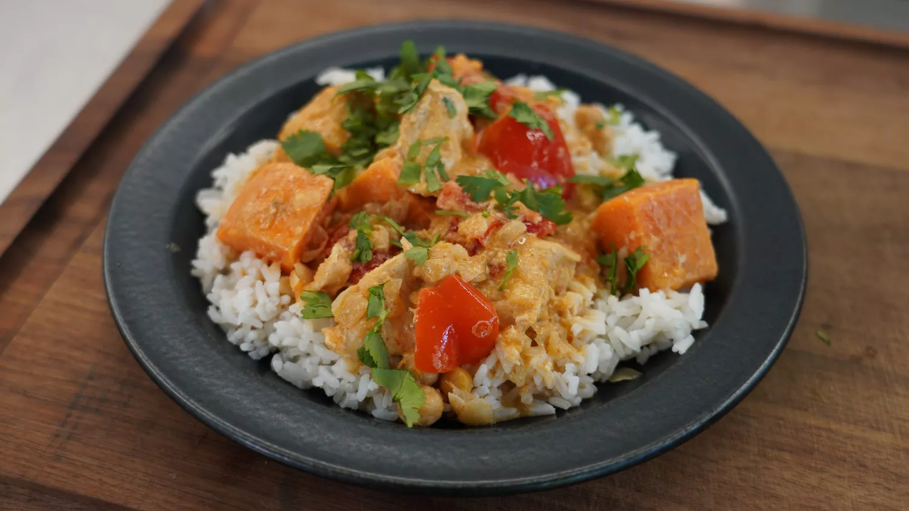

Wednesday: Coconut Chicken Curry

Description
Gourmet from your freezer! Sweet, creamy, spicy, and meaty—this make-ahead chicken curry meal is full of delicious flavor and great when you're craving something like takeout but want to make it at home. Top with fresh green onions and cilantro to brighten up the dish.
Ingredients
To Make Ahead:
- 1 ½ pounds boneless, skinless chicken breasts, cut into 2-inch pieces
- 1 (16 ounce) can chickpeas, drained and rinsed
- 1 large sweet potato, cut into 1-inch cubes
- 1 medium red bell pepper, cut into 1-inch pieces
- 1 small onion, cut into 1/2-inch pieces
- 1 (15 ounce) can unsweetened coconut milk
- 3 tablespoons creamy peanut butter
- 3 tablespoons lime juice
- 2 tablespoons brown sugar
- 1 ½ tablespoons red curry paste
- ½ teaspoon garlic powder
- ½ teaspoon ground ginger
- 1 ¼ teaspoons kosher salt
To Serve:
Directions
- Combine chicken, chickpeas, bell pepper, sweet potato and onion in a 1-gallon, resealable freezer bag.
- Whisk coconut milk, peanut butter, lime juice, brown sugar, curry paste, garlic powder, ginger, and salt together in a medium bowl until well combined. Pour mixture into the bag. Tightly seal and mix the contents until well combined. Freeze for up to one month.
- The day before cooking, remove bag from the freezer and allow contents to thaw in the refrigerator for 24 hours.
- Empty bag into a slow cooker. Cook on High for 4 hours until chicken is no longer pink in the center and the juices run clear.
- Serve curry over hot rice
Home